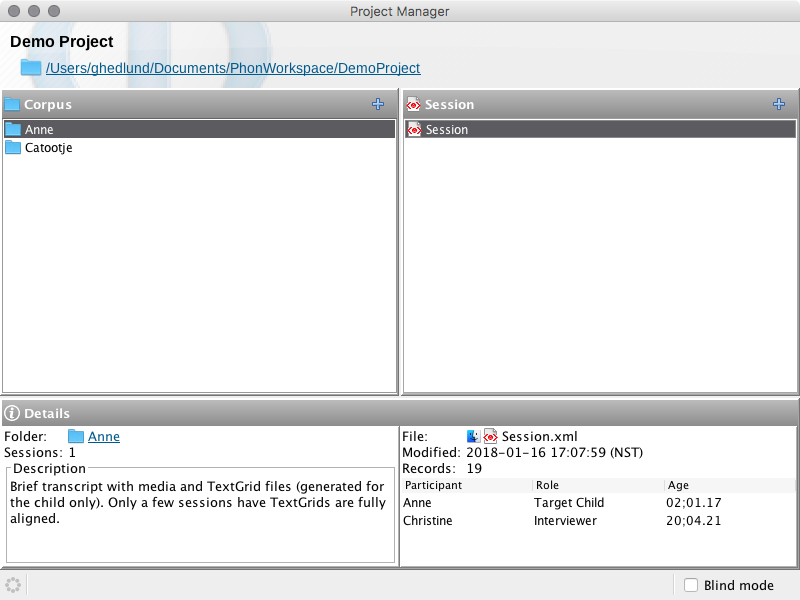

Project Manager
The Project Manager window is displayed when you open a project from the Welcome window or by using the File -> Open menu item.

The Project Manager window is displayed when you open a project from the Welcome window or by using the File -> Open menu item.